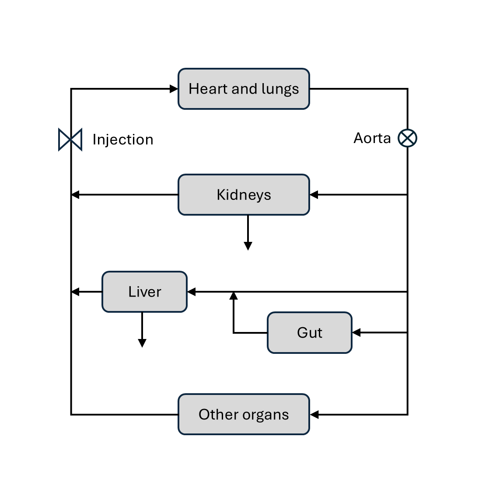

Whole body#
Whole body pharmacokinetic models can be built by assembling suitable building blocks (see section Pharmacokinetics) into a closed model of the circulation. We will illustrate the approach by using a whole-body model to predict the indicator flux in the aorta (see diagram below).
{kind=link}
A model of this type is available through the function dcmri.flux_aorta,
which has some flexibility to use different models for the organs
in the model. For the purpose of this section we will model the organs as
follows:
Heart-lung system: chain (
dcmri.flux_chain).Organs: two-compartment exchange model (
dcmri.flux_2cxm).Kidneys: one-compartment (
dcmri.flux_comp).Liver-gut system: plug-flow compartment (
dcmri.flux_pfcomp).
Note that, since our aim here is to model the flux in the aorta, we only need to model the extracellular spaces of kidney and liver as filtered indicator is not returned to the blood stream.
Assume a known injection \(J_{v,0}(t)\) into the venous system. With a standard bolus
injection this can be approximated by a step function between the start and
end of the injection period (see dcmri.ca_injection). The first-pass \(J_{a,1}(t)\)
through the aorta can be computed by propagating the input through the
heart-lung system. Using the propagator for a chain:
The flow through the aorta then splits up into 3 parts: a fraction \(F_l\) enters the liver, a fraction \(F_k\) enters the kidneys and a fraction \(F_o\) enters the other organs. These flow fractions must add up to 1, so one is dependent on the other two:
Each of the three components then pass through their respective organ systems, to produce the first pass outflux \(J_{k,1}, J_{l,1}, J_{o,1}\) out of kidney, liver and other organs, respectively. The passage can be computed by convolution with the appropriate propagator. For the kidnyes this is the compartment propagator:
For the liver it is the plug-flow compartment:
and for the other organs this is the 2-compartment exchange propagator:
These three now join again and add up to produce the first pass in the venous system. At this stage we also correct for the extraction fraction \(E_{kl}\) by the combined effect of liver and kidneys:
We can now repeat these steps to produce the second pass \(J_{v,2}\):
These steps are iterated to produce the third pass \(J_{a,3}\), fourth pass \(J_{a,4}\) and so on. The total flux through the aorta can be determined by adding up the contributions of each pass:
At each iteration the residual dose in the system reduces because of the extraction by liver and kidneys, and because dispersion gradually shifts the bolus beyond the acquisition window. At some point the total dose becomes too small to have any measureable impact on the result and we can stop iterating.
In practice we compute the residual dose \(r_i\) at each iteration (here \(t_\max\) is the total acquisition time):
And then truncate the sum as soon as the residual dose drops below a user- defined tolerance.
The analysis shows that this models the aorta flux in terms of 11 independent
parameters: 5 mean transit times \(\{T_{hl}, T_k, T_{gl}, T_p, T_e\}\), 2
dispersions \(\{D_{hl}, D_{gl}\}\) and 4 independent fractions
\(\{F_k, F_l, E_o, E_{kl}\}\). The result can be derived in one step by
using the function dcmri.flux_aorta with the following arguments:
Ja = flux_aorta(Jv_0, t,
E = Ekl,
FFkl = Fk + Fl,
FFk = Fk / (Fk + Fl),
heartlung = ['chain', (Thl, Dhl)],
organs = ['2cxm', ([Tp, Te], Eo)],
kidneys = ['comp', (Tk,)],
liver = ['pfcomp', (Tgl, Dgl)],
tol = 1e-3,
)
Other models can be derived with the same function, for instance a simplified model where all organs including kidney and liver are modelled by a single two-compartment exchange model:
Ja = flux_aorta(Jv_0, t,
E = Ekl,
heartlung = ['chain', (Thl, Dhl)],
organs = ['2cxm', ([Tp, Te], Eo)],
tol = 1e-3,
)